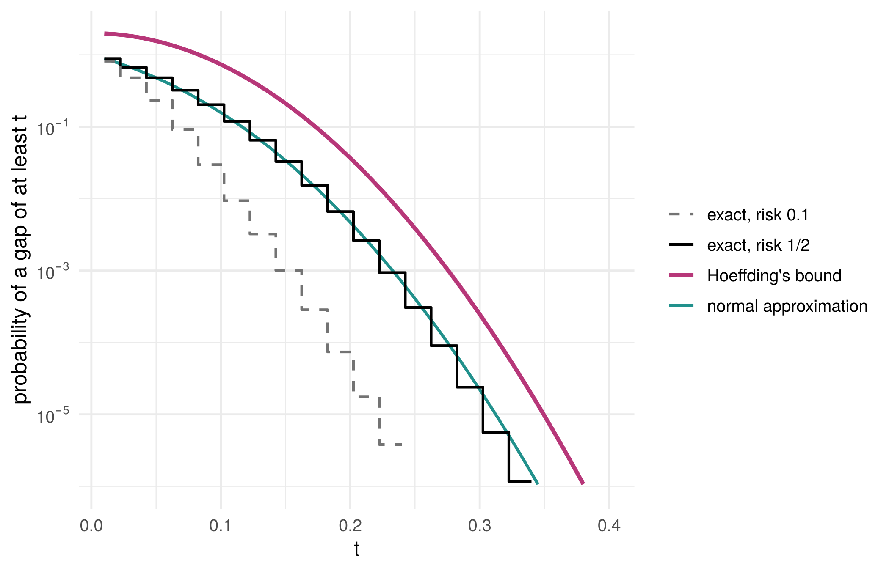
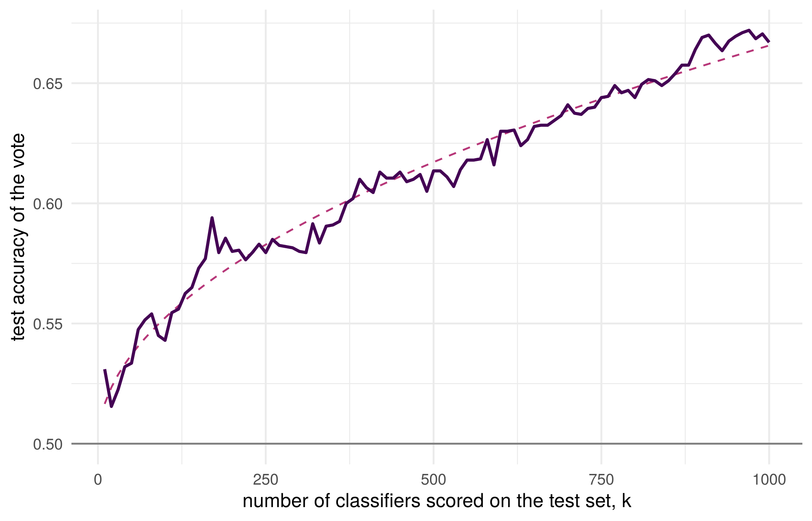
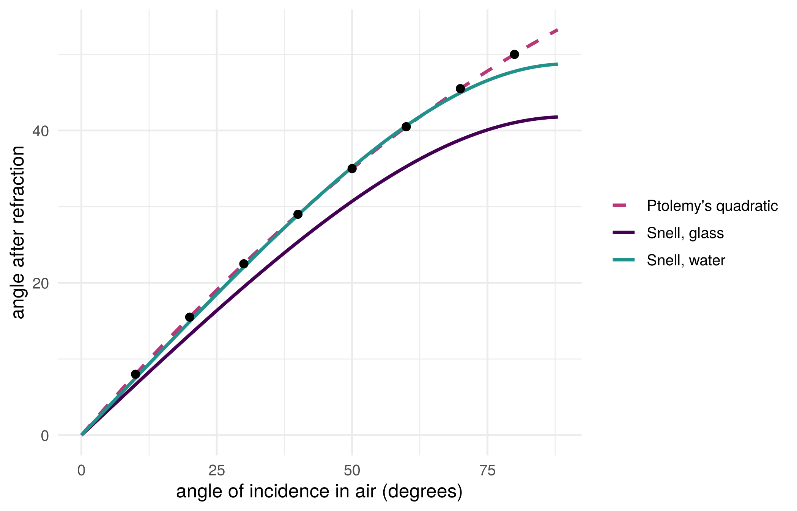

Most of what machine learning knows about which methods work comes from competitions: a shared dataset, a task, an agreed score, and a hidden evaluation set, with the winner chosen by best score. This note is about what such a win establishes. It follows the lecture: how far a score can be from what it estimates; how reusing a test set can mislead; what happens when the data a model meets differ from the data it was scored on; what a winning score can justify; and what it cannot answer, because the target or the task itself is in question. Each section opens with the works it draws on, and the sections of them it uses; full references are at the end.
Show the setup code
library(tidyverse)# Course palette (theme/st310.scss): viridis for the primary scale, magma for the second.v_dark <-"#440154"; v_blue <-"#31688e"; v_teal <-"#21918c"; m_pink <-"#b73779"; m_orange <-"#fc8961"theme_set(theme_minimal(base_size =12))set.seed(310) # the note's one seed
The common task framework
Reference: Donoho (2017), section 6; Rodu and Baiocchi (2023), section 9.
Donoho gives the framework three ingredients: a publicly available training dataset; a set of competitors whose common task is to produce a prediction rule from it; and a referee who scores each submitted rule on test data the competitors cannot see. He takes the name from the computational linguist Mark Liberman and traces the practice to US research programs from the late 1980s, in which groups funded by DARPA were scored on shared, sequestered data, with NIST as the referee. He argues that this framework, together with predictive modeling, is what made machine learning so productive: effort goes to measured performance, many groups can compete, judging is impartial and automatic, and the winning rules have already been tested on data they did not see, which makes them look close to ready for use. In a footnote he records that the winning algorithm of the Netflix challenge was never implemented.
Liberman’s own account, in a letter quoted by Rodu and Baiocchi, adds something Donoho does not stress. The framework was designed to steer government-funded research on problems far from practical use. Tasks were deliberately chosen not to be the real goal of the work, and metrics were chosen to be simple and automatic, so that they were at best loosely related to what the research was for. Liberman’s view is that tasks and metrics have to be rethought when the aim is an application rather than research progress.
How far a score can be from its risk
Reference: Hoeffding (1963).
A model \(f\), fixed before the test data are seen, is scored on \(m\) test rows. Its score is the mean of their losses, \[
\hat R = \frac1m \sum_{j=1}^m \ell_j, \qquad \ell_j = \ell\big(y_j^{\text{test}}, f(x_j^{\text{test}})\big),
\] and, for rows drawn independently from one distribution, the losses are independent with mean \(R = R(f)\), the model’s risk. How far can \(\hat R\) be from \(R\)?
The variance. Suppose every loss is between 0 and 1, as for a 0–1 loss or the Brier score \((y - \hat p)^2\) of a probability. Then \(\ell^2 \le \ell\), so \[
\mathrm{Var}(\ell) = \mathbb E[\ell^2] - (\mathbb E\ell)^2 \le \mathbb E\ell - (\mathbb E\ell)^2 \le \tfrac14,
\qquad\text{and so}\qquad
\mathrm{Var}(\hat R) \le \frac{1}{4m}.
\] The worst case, variance \(\frac14\), is a loss that is 0 or 1 with probability \(\frac12\) each.
A heuristic. For large \(m\) the central limit theorem says that \(\hat R - R\) is roughly normal. A normal variable \(Z\) with mean 0 and variance \(\sigma^2\) satisfies \(P(|Z| \ge t) \le 2e^{-t^2/(2\sigma^2)}\), and with the largest variance a loss between 0 and 1 allows, \(\sigma^2 = 1/(4m)\), this is \[
P\big(|\hat R - R| \ge t\big) \lessapprox 2e^{-2mt^2}.
\] This is a heuristic, not a bound. The central limit theorem describes the middle of the distribution of \(\hat R\) well, but at a fixed \(m\) it says nothing reliable about the far tail, and the far tail is where a small probability such as \(\delta = 0.05\), or \(0.05\) divided among many models, lives.
Hoeffding’s inequality (Hoeffding 1963, Theorem 2, applied to each tail) says the heuristic is right. If \(Z_1, \ldots, Z_m\) are independent with \(0 \le Z_i \le 1\) and \(\bar Z\) is their mean, then for every \(t > 0\) and every \(m\), \[
P\big(|\bar Z - \mathbb E\bar Z| \ge t\big) \le 2e^{-2mt^2}.
\] Three things make it believable without the proof.
It is the normal tail at the worst-case variance. A variable confined to \([0, 1]\) cannot spread out more than its range allows. The proof makes this precise: such a variable’s moment generating function is never larger than that of a normal variable with variance \(\frac14\), and from there the bound follows as it would for a normal mean. So the bound is what the heuristic gives, but it holds for every \(m\), not only in the limit.
It shrinks exponentially in \(m\). For \(\hat R\) to be \(t\) above \(R\), the rows must err in the same direction, on average, by \(t\). Each further independent row multiplies the bound by \(e^{-2t^2}\), so the chance of a large gap falls geometrically with the number of rows.
The gap shrinks like \(1/\sqrt m\). Setting the right-hand side equal to \(\delta\) and solving for \(t\): with probability at least \(1 - \delta\), \[
|\hat R - R| < \sqrt{\frac{\log(2/\delta)}{2m}}.
\] Halving the gap takes four times as many rows, as for a standard error, and the confidence level enters only through \(\log(1/\delta)\), so asking for much more confidence costs little.
Show the code
m_h <-50tails <-expand_grid(t =seq(0.01, 0.4, by =0.0025), R =c(0.5, 0.1)) |>mutate(exact =map2_dbl(t, R, function(t, R) { k <-0:m_h; sum(dbinom(k, m_h, R)[abs(k / m_h - R) >= t -1e-12]) }),normal =2*pnorm(-t /sqrt(R * (1- R) / m_h)), bound =2*exp(-2* m_h * t^2))ggplot(tails, aes(t)) +geom_line(data =filter(tails, R ==0.5), aes(y = bound, colour ="Hoeffding's bound"), linewidth =1.1) +geom_line(data =filter(tails, R ==0.5), aes(y = normal, colour ="normal approximation"), linewidth =0.8) +geom_step(data =filter(tails, R ==0.5), aes(y = exact, colour ="exact, risk 1/2"), linewidth =0.7) +geom_step(data =filter(tails, R ==0.1), aes(y = exact, colour ="exact, risk 0.1"), linewidth =0.7, linetype ="dashed") +scale_y_log10(limits =c(1e-6, 2), labels = scales::label_log()) +scale_colour_manual(values =c("Hoeffding's bound"= m_pink, "normal approximation"= v_teal,"exact, risk 1/2"="black", "exact, risk 0.1"="grey45"), name =NULL) +labs(x ="t", y ="probability of a gap of at least t")

Figure 1: The probability that the mean of \(m = 50\) losses of 0 or 1 is at least \(t\) from its expectation, on a log scale: exactly (binomial) when the risk is \(\frac12\), the normal approximation, and Hoeffding’s bound \(2e^{-2mt^2}\). The dashed line is the exact probability when the risk is 0.1, where the variance is smaller and the bound, which uses only the range, is loose.
Many models at once. A leaderboard scores \(K\) models. If they were all fixed before the test rows were opened, the chance that any score is \(t\) or more from its risk is at most the sum of the \(K\) chances, \(2Ke^{-2mt^2}\) (the union bound, which needs no independence between the scores). Setting this equal to \(\delta\), every one of the \(K\) scores is within \[
t_K = \sqrt{\frac{\log(2K/\delta)}{2m}}
\] of its risk, with probability at least \(1 - \delta\). The number of models enters only through \(\log K\). In the lecture, \(K = 5\) models on \(m = 8{,}000\) tuning rows give \(t_K = 0.018\); a million models on the same rows would give 0.033. What the bound costs is that it uses only the range of the losses. When the losses vary much less than the worst case allows, as the Brier scores of a good model do, the true gaps are far smaller than \(t_K\).
Two models on the same rows. To compare models \(A\) and \(B\), take the difference of their losses on each row, \(\Delta_j = \ell_{A,j} - \ell_{B,j}\). The difference of their scores is \(\bar\Delta\), with \[
\mathrm{Var}(\bar\Delta) = \frac{\mathrm{Var}(\ell_A) + \mathrm{Var}(\ell_B) - 2\,\mathrm{Cov}(\ell_A, \ell_B)}{m},
\] estimated by \(\mathrm{sd}(\Delta)^2/m\). Two good models tend to be wrong on the same rows, so the covariance is large and the paired standard error far smaller than either score’s. In the lecture it was about a third of either score’s standard error, which let the same rows separate two models whose individual error bars overlapped.
A number that is not a mean. Some numbers that matter for a deployed model are not averages of per-row losses: the share of high-cost patients among the 3% with the highest scores depends on every patient’s score, through which patients make the top 3%. For such a statistic \(T\), the bootstrap of the test rows estimates its variability: draw \(m\) rows with replacement, recompute \(T\) on them, repeat \(B\) times, and read off the spread, for example the 5th and 95th percentiles of the \(B\) values. To compare two models, each drawn row keeps both models’ predictions, so that the comparison stays paired. The models are held fixed: the bootstrap describes how \(T\) varies with the test rows, not how it would vary if the models were refitted, and it does nothing to correct for how the models being compared were chosen.
Reusing a test set
Reference: Hardt and Recht (2022), chapter 8, section “Longevity of benchmarks”; Recht et al. (2019), sections 1 and 2; Roelofs et al. (2019), section 1.
The union bound assumed the \(K\) models were fixed in advance. In a benchmark that runs for years, each new model is designed after seeing the scores of the old ones on the same test set, and then the bound no longer applies: a score can be driven away from the risk. PPA shows how far in the worst case. Take a binary task whose labels nobody can predict, so that every model’s true accuracy is \(\frac12\). Submit \(k\) random classifiers, keep those that happen to score above \(\frac12\) on the \(n\) test points, and take their majority vote. The vote’s test accuracy exceeds \(\frac12\) by an amount of order \(\sqrt{k/n}\), while its accuracy on new data stays at \(\frac12\). Without adaptivity, the largest gap among \(k\) fixed classifiers grows only like \(\sqrt{\log(k)/n}\), as the union bound says.
Show the code
n_a <-2000; k_max <-1000y_a <-rbinom(n_a, 1, 0.5)preds <-matrix(rbinom(k_max * n_a, 1, 0.5), nrow = k_max) # k random classifiers, as their predictions on the test pointsacc <-rowMeans(preds ==matrix(y_a, k_max, n_a, byrow =TRUE))ks <-seq(10, k_max, by =10)vote_acc <-map_dbl(ks, function(k) { keep <-which(acc[1:k] >0.5)mean((colMeans(preds[keep, , drop =FALSE]) >0.5) == y_a)})c_fit <-coef(lm(I(vote_acc -0.5) ~0+sqrt(ks / n_a)))[[1]]tibble(k = ks, acc = vote_acc) |>ggplot(aes(k, acc)) +geom_hline(yintercept =0.5, colour ="grey50") +geom_function(fun =function(k) 0.5+ c_fit *sqrt(k / n_a), linetype ="dashed", colour = m_pink) +geom_line(colour = v_dark, linewidth =0.9) +labs(x ="number of classifiers scored on the test set, k", y ="test accuracy of the vote")

Figure 2: Overfitting by reusing a test set of \(n = 2{,}000\) points whose labels are coin flips. After \(k\) random classifiers have been scored, the majority vote of those that scored above one half has the test accuracy shown; its accuracy on new points is one half. The dashed curve is \(\frac12 + c\sqrt{k/n}\), with \(c\) fitted to the simulated points by least squares.
Whether this happens in practice is an empirical question, and two studies tested it.
Recht et al. built new test sets for CIFAR-10 and ImageNet by repeating the original collection procedures. Every model scored worse on the new data, many by around 10 percentage points; the best ImageNet model in their Table 1 fell from 82.9% to 72.2%. But the order of the models was almost unchanged, and models that were better on the old test set gained more on the new one, which is not what overfitting to the old test set would produce. They split the drop in score into three parts (their section 2), here in the course’s notation for losses: \[
\hat R_{\text{old}} - \hat R_{\text{new}} = \underbrace{\big(\hat R_{\text{old}} - R_{\text{old}}\big)}_{\text{adaptivity}} + \underbrace{\big(R_{\text{old}} - R_{\text{new}}\big)}_{\text{distribution}} + \underbrace{\big(R_{\text{new}} - \hat R_{\text{new}}\big)}_{\text{sampling}},
\] where \(R_{\text{old}}\) and \(R_{\text{new}}\) are the model’s risks under the old and new collection procedures. The last term is the one Hoeffding’s inequality controls; adaptivity is the term the union bound no longer controls once the models depend on the old scores. Their evidence points to the middle term: the new images were slightly harder.
Roelofs et al. compared the public and private leaderboards of 120 Kaggle competitions. The public leaderboard is the score competitors see and react to; the private one is a separate test set used once at the end. Apart from competitions with problems such as small test sets or splits that were not random, the two agreed closely.
PPA offers two reasons why adaptivity did less damage than the worst case. Models built by practitioners resemble each other, so the number of genuinely different predictions they try is far smaller than the worst case allows (model similarity). And researchers mostly report whether a new model beats the best so far, which reveals less about the test set than reporting every score (the leaderboard principle). The chapter is careful to say these explain only part of what was observed. The lesson the readings draw is that a benchmark score has held up well as a comparison between models on its own distribution, and less well as an estimate of how a model will do on data collected even slightly differently.
When the distribution moves
Reference: Nastl and Hardt (2024), sections 1 and 3.
A score is evidence about the distribution its test rows came from. Write \(p_{\text{train}}(x, y)\) for that distribution and \(p_{\text{test}}(x, y)\) for the one the model will be used on, and \(R_{\text{train}}(f)\) and \(R_{\text{test}}(f)\) for the risks under each. A model is scored in distribution when new rows come from \(p_{\text{train}}\), which is what a held-out test set measures; it is used out of distribution when \(p_{\text{test}}\) differs. Every joint distribution can be factored two ways, \[
p(x, y) = p(x)\,p(y \mid x) = p(y)\,p(x \mid y),
\] and the two standard kinds of shift assume that one conditional distribution stays fixed while the marginal beside it moves.
Covariate shift
Assumption: \(p_{\text{test}}(y \mid x) = p_{\text{train}}(y \mid x)\); only the distribution of the inputs changes. Write \(r(x) = \mathbb E[\ell(Y, f(X)) \mid X = x]\), the expected loss at \(x\), which by the assumption is the same under both distributions, and \[
w(x) = \frac{p_{\text{test}}(x)}{p_{\text{train}}(x)}.
\] Then \[
\begin{aligned}
R_{\text{test}}(f) &= \mathbb E_{\text{test}}\big[r(X)\big] && \text{tower property; } r \text{ is the same under both}\\
&= \int r(x)\, p_{\text{test}}(x)\, dx \\
&= \int r(x)\, w(x)\, p_{\text{train}}(x)\, dx && \text{needs } p_{\text{train}}(x) > 0 \text{ wherever } p_{\text{test}}(x) > 0\\
&= \mathbb E_{\text{train}}\big[w(X)\, \ell(Y, f(X))\big] && \text{tower property again.}
\end{aligned}
\] This is the covariate-shift identity. It turns the risk on the new population into an average over the old one, with each row reweighted by how much more (or less) common its inputs are where the model will be used. It is the same move as inverse propensity weighting, where each unit is weighted by \(1/\pi(Z)\) and \(0 < \pi(Z) < 1\) is needed; here the condition is overlap, that the training distribution covers every input the model will meet.
Estimating the new risk. On \(m\) held-out rows from the training distribution, the reweighted score \[
\hat R_w = \frac1m \sum_{j=1}^m w(x_j)\,\ell_j
\] has expectation \(R_{\text{test}}(f)\), by the identity. Its variance is \(\mathrm{Var}_{\text{train}}(w\ell)/m\), which for losses between 0 and 1 is at most \(\mathbb E_{\text{train}}[w(X)^2]/m\). A common summary is the effective sample size, \((\sum_j w_j)^2 / \sum_j w_j^2\), the number of unweighted rows that would give about the same variance; since \(\mathbb E_{\text{train}}[w] = 1\), it is roughly \(m / \mathbb E_{\text{train}}[w^2]\).
A one-dimensional example shows how quickly the price grows. Take \(p_{\text{train}} = N(0, 1)\) and \(p_{\text{test}} = N(\mu, 1)\). Then \(w(x) = e^{\mu x - \mu^2/2}\), and \[
\mathbb E_{\text{train}}\big[w(X)^2\big] = \mathbb E\big[e^{2\mu X - \mu^2}\big] = e^{2\mu^2 - \mu^2} = e^{\mu^2},
\] so the effective sample size is about \(m e^{-\mu^2}\): 37% of the rows for a shift of one standard deviation, 1.8% for two. The overlap condition holds for every \(\mu\), but the rows that carry the information become rare.
Figure 3: Covariate shift in one dimension. Left: the training and deployment densities of the input, \(N(0, 1)\) and \(N(1.5, 1)\). Right: the weight \(w(x) = p_{\text{test}}(x)/p_{\text{train}}(x)\) on a log scale. The deployment population is mostly where training rows are rare, so a few rows get large weights.
When \(w\) is unknown. In practice \(w\) is estimated. One way uses a classifier: pool the training inputs with a sample of deployment inputs, and estimate the probability \(P(\text{deployment} \mid x)\) that a row with inputs \(x\) came from the deployment sample. By Bayes’ rule, \[
w(x) = \frac{P(\text{deployment} \mid x)}{P(\text{training} \mid x)} \cdot \frac{n_{\text{train}}}{n_{\text{test}}},
\] a ratio of the two classes’ probabilities, as in inverse propensity weighting. Estimated weights add estimation error to the variance above, and where the two populations barely overlap, the estimated probabilities near 0 or 1 make the weights unstable.
The weights are needed to evaluate a fixed model on the new population. Whether to fit with them is a separate question: if the model is a good estimate of \(\mathbb E[Y \mid X = x]\) wherever the deployment population lives, the same fit is good there and reweighting the fit adds variance; if the model is misspecified, reweighting the fit can move its errors to where they matter less.
Label shift
Assumption: \(p_{\text{test}}(x \mid y) = p_{\text{train}}(x \mid y)\); only the share of each class changes. For a binary outcome write \(q = P(Y = 1)\), with values \(q_{\text{train}}\) and \(q_{\text{test}}\). Bayes’ rule, in odds, gives \[
\frac{P(Y = 1 \mid X = x)}{P(Y = 0 \mid X = x)} = \frac{p(x \mid 1)}{p(x \mid 0)} \cdot \frac{q}{1 - q}.
\] The first factor is the same under both distributions, by the assumption; only the second changes. Taking logs, with \(\operatorname{logit} u = \log\frac{u}{1 - u}\), \[
\operatorname{logit} P_{\text{test}}(Y = 1 \mid X = x) = \operatorname{logit} P_{\text{train}}(Y = 1 \mid X = x) + \underbrace{\operatorname{logit} q_{\text{test}} - \operatorname{logit} q_{\text{train}}}_{\text{the same for every } x}.
\] This is the label-shift identity. Three consequences:
Calibration is lost, and an intercept repairs it. A score \(s(x)\) calibrated under training, \(s(x) = P_{\text{train}}(Y = 1 \mid X = x)\), is off under deployment by the same shift on the log-odds scale at every \(x\). Adding \(\operatorname{logit} q_{\text{test}} - \operatorname{logit} q_{\text{train}}\) to its log-odds repairs it: this is recalibration by a logistic regression on the logit of the score, with the slope kept at 1. It needs \(q_{\text{test}}\), known or estimated (estimating it is beyond this course).
The threshold. With unchanged costs, the optimal threshold theorem still says: predict 1 when the correct probability, now \(P_{\text{test}}(Y = 1 \mid X = x)\), exceeds \(c^\star = c_{FP}/(c_{FP} + c_{FN})\). In terms of the old score that is \[
\operatorname{logit} s(x) > \operatorname{logit} c^\star - \big(\operatorname{logit} q_{\text{test}} - \operatorname{logit} q_{\text{train}}\big),
\] so the threshold on the correct deployment probability is unchanged and the old score needs a new threshold. For example, with \(c^\star = \frac12\), \(q_{\text{train}} = \frac14\), and \(q_{\text{test}} = \frac12\), the shift is \(\log 3\) and the old score’s threshold becomes \(\frac14\).
The ranking survives. The map from \(s(x)\) to the deployment probability is increasing, so the units are ranked in the same order, and quantities that depend only on the ranking, such as the AUC, are unchanged in expectation.
Figure 4: Label shift: the correct deployment probability as a function of a score calibrated under training, when the share of positives moves from one quarter to one half or to one tenth. The dotted lines show the threshold one half on the deployment probability, and where it falls on the old score.
What survives which shift
No property is guaranteed under shift; which one survives depends on which mechanism changed.
Covariate shift, \(p(y \mid x)\) fixed
Label shift, \(p(x \mid y)\) fixed
Risk
changes; estimate it with the weights \(w(x)\)
changes
Calibration
kept by a correct model of \(p(y \mid x)\), not always by a misspecified one
lost; move the intercept
Ranking of units by score
the true \(p(y \mid x)\) ranks them the same way; a model’s AUC can change with the mix of units
kept
Coverage of a split conformal interval
not guaranteed: new rows are no longer exchangeable with the held-out ones
not guaranteed
Neither correction helps when \(p(y \mid x)\) itself changes: a new payment rule, a new treatment, a change in who receives care. Old rows carry no information about the new relation, and only new outcomes reveal it. Deploying a model can be what changes it: a program that enrolls the patients predicted to cost the most changes what they cost.
Causes and effects as inputs
A natural hope is that a model built on the causes of the outcome will travel better than one built on everything, because the distribution of an outcome given all its causes is unchanged by interventions that leave the outcome’s own mechanism alone. Nastl and Hardt tested this on 16 prediction tasks from tabular data in health, employment, education, social benefits, and politics, each with several domains: income across regions of the US, voting across regions, hospital mortality across insurance types, and others. For each task they chose a conservative set of causal features, a broader set of arguably causal ones, and the full set. Models on all the features had the best accuracy both within the training domain and in new domains, in every task, and adding features that the outcome plausibly causes helped the causal models out of domain. Methods designed for causal domain generalization did no better than standard models on the arguably causal features. They note that the choice of causal features is a judgment, that the available features may leave out real causes, and that the study covers tabular data only. The theory they test is about the true conditional distribution given all the causes; a model fitted to a handful of causal features measured in a survey is a different object, and its risk can still change across domains.
What a winning score can justify
Reference: Rodu and Baiocchi (2023), sections 1, 2, 3.3, 3.4, 4, and 6; Feynman et al. (1963), chapter 26.
Rodu and Baiocchi list five features of the framework (section 1.2): curated data in a repository; static data shared by every analyst; a well-defined task; agreement on the evaluation metric; and an evaluation set the analysts cannot see. Done correctly, a competition with these features supports a comparison: on this task, with this metric, one algorithm performs better than another. It takes a real problem and puts it in a sandbox. What it does not provide is a foundation for deploying the winner. In their words: “Competing successfully in a CTF event does not warrant deployment” (section 6).
To say what would, they separate two ways of trusting a prediction (section 4.1):
Outcome reasoning judges an algorithm by its measured performance on outcomes. Beliefs about the world enter only through the choice of metric. It is the reasoning of the common task framework, and the authors extend it to deployment: an algorithm in use can keep being judged on the outcomes it predicted. But it can only be applied once outcomes have been observed.
Model reasoning judges an algorithm by whether its structure agrees with what we believe about the problem. It needs deductive argument and beliefs that can be stated, and in return it can be debated before the algorithm is used.
They then ask when outcome reasoning alone is enough, and give four conditions, which they call MARA (sections 2 and 4.2):
Measurement: the outcomes of future predictions can be observed and scored;
Adaptability: the algorithm can be updated faster than the problem changes, and its use does not itself change the outcomes it predicts;
Resilience: the errors that accumulate while the algorithm is in use are tolerable;
Agnosis: the people affected can tolerate an algorithm whose structure may conflict with their beliefs, which may be scientific or moral.
Each condition depends on who is asking: the “(s)” in MARA(s) stands for the stakeholders (section 2.1). A triage algorithm for mild symptoms can satisfy all four from a hospital administrator’s point of view, while for one patient the prediction replaces the diagnosis, so the outcome that would check it is never measured (section 3.3). The authors say plainly that their framework does not decide who counts as a stakeholder. Their main negative example is a recidivism score used in decisions about detention (sections 3.4 and 6): people who are detained have no observed outcome, so measurement fails, and for public defenders and the people being scored they argue that resilience and agnosis fail as well. When the conditions fail, they recommend that stakeholders ask for model reasoning before the algorithm is used.
The lecture’s optics slides make the same distinction with an older example. Ptolemy’s table of refraction angles from air into water, as Feynman reprints it (Table 26-1), lists 8, 15½, 22½, 29, 35, 40½, 45½, and 50 degrees for angles of incidence from 10 to 80. Its second differences are all \(-\frac12\), so it is exactly the quadratic \(r = 8.25k - 0.25k^2\) with \(k\) the angle of incidence in tens of degrees: a curve that fits the measurements it came from. Snell’s law, \(\sin i = n \sin r\), fits the same angles within a few degrees with \(n = 1.33\) for water, and says how they change in glass, where \(n\) is about 1.5. Fermat’s principle of least time, from which the law follows, is the kind of structure model reasoning checks.
Show the code
quad <-function(i) 8.25* (i /10) -0.25* (i /10)^2snell <-function(i, n) asin(sin(i * pi /180) / n) *180/ piptolemy <-tibble(i =seq(10, 80, 10), r =c(8, 15.5, 22.5, 29, 35, 40.5, 45.5, 50))tibble(i =seq(0, 88, by =1)) |>mutate(`Ptolemy's quadratic`=quad(i), `Snell, water`=snell(i, 1.33), `Snell, glass`=snell(i, 1.5)) |>pivot_longer(-i, names_to ="curve", values_to ="r") |>ggplot(aes(i, r, colour = curve, linetype = curve)) +geom_line(linewidth =1) +geom_point(data = ptolemy, aes(i, r), inherit.aes =FALSE, size =2) +scale_colour_manual(values =c("Ptolemy's quadratic"= m_pink, "Snell, water"= v_teal, "Snell, glass"= v_dark), name =NULL) +scale_linetype_manual(values =c("Ptolemy's quadratic"="dashed", "Snell, water"="solid", "Snell, glass"="solid"), name =NULL) +labs(x ="angle of incidence in air (degrees)", y ="angle after refraction")

Figure 5: Ptolemy’s table (points) and its quadratic, against Snell’s law with \(n = 1.33\) for water and \(n = 1.5\) for glass. The glass curve is computed from the law, not measured; the quadratic has nothing to change for glass.
When the target or the task is wrong
Reference: Obermeyer et al. (2019); Hardt and Recht (2022), chapter 8, sections “Harms associated with data” and “Limits of data and prediction”; Salganik et al. (2020); Wang et al. (2024), sections 2.1, 2.2, 3.1, 3.2, 3.4, 3.6, and 4.4; Kiviat (2019).
The cost score. Obermeyer et al. studied a commercial algorithm that health systems use to choose patients for programs that give extra care to people with complex needs. In the system they studied, patients above the 97th percentile of the algorithm’s score were enrolled automatically and those above the 55th were referred to their doctor (p. 448). The data covered about 6,000 Black and 43,500 White patients from 2013 to 2015. The algorithm predicts next year’s health care cost and does not use race (p. 449). As a predictor of cost it does what it was built to do: at a given score, realized costs are about the same for Black and White patients (their Figure 3A). But at the 97th percentile Black patients had 4.8 active chronic conditions against 3.8 for White patients (p. 448), and at the same number of chronic illnesses about $1,800 a year less was spent on Black patients (p. 450). Because less is spent on them for the same need, a score that predicts cost understates their need, while being accurate and calibrated for the target it was given.
The authors released a synthetic version of their data, generated to mimic it: 48,784 patient-years, with the commercial score in the column risk_score_t. The figure draws the paper’s two comparisons from it.
Figure 6: The synthetic patient-years released with Obermeyer et al. (2019), by percentile of the commercial algorithm’s score (bins of 5 percentiles; the dashed line is the 97th percentile). Left: mean cost the next year. Right: mean number of active chronic conditions the next year.
In the synthetic rows, the patients between the 55th and 97th percentiles of the score, the range referred to a doctor, cost about the same on average in the two groups ($10,000 for Black and $10,100 for White patients), while Black patients had 3.0 active chronic conditions against 2.0. Above the 97th percentile the synthetic rows do not reproduce the paper’s calibration: there Black patients cost more on average ($58,500 against $39,000, from 293 and 1,171 patient-years), as well as having more chronic conditions (6.6 against 5.2). Synthetic data that match the original’s broad patterns need not match it in a thin tail, which is a reason to state claims about these rows as claims about the synthetic data. The lecture makes the same comparisons with a model fitted in class.
The authors then trained models with the same inputs on three targets: total cost, avoidable cost, and the number of active chronic conditions (Table 2, p. 452). The share of Black patients among the top 3% of predicted risk was 14.1% with total cost as the target and 26.7% with active chronic conditions. Changing the target changed who would be offered care. The manufacturer, working with the authors, retrained its algorithm with a different target and reduced the bias on its own national data.
One more lesson comes from the authors’ repository rather than the paper. The abstract reports that removing the bias would raise the share of Black patients receiving extra help from 17.7% to 46.5%. In 2022 the authors posted a correction: a coding error in that simulation made the second number too low, and the corrected figure is 59%. They also report a critique of the swapping procedure behind it. A number quoted from an abstract is worth checking against the authors’ latest materials.
The framing of the task. PPA’s section on harms gives two examples of how the way a task is set up decides what a good score means. Claims that models beat human accuracy at image classification rested on loosely defined human baselines. And for predicting which defendants will fail to appear in court, the chapter points out that the usual causes (transportation, childcare, work hours) can be addressed directly, so a more accurate prediction used to justify detention may be the wrong response to the problem. Its subsection on privacy tells how the ratings released for the Netflix challenge were linked to public IMDb ratings to identify subscribers, and how the fallout ended a planned second competition.
How predictable the outcome is. PPA’s last section describes the Fragile Families Challenge (Salganik et al. 2020). Competitors were given data on 4,242 families, followed from a child’s birth to age 9, with about 12,900 variables, and asked to predict six outcomes measured at age 15, among them the child’s grade point average and whether the family was evicted. About 160 teams submitted models. The best predictions were not very accurate and only slightly better than a simple benchmark, and how badly a family was predicted depended much more on the family than on the method. The chapter’s reading is that some life outcomes may be close to unpredictable over such a span, whatever the method, and that prediction is a weak basis for decisions when the world is changing or when the question is what an intervention would do.
Against predictive optimization. Wang et al. name the kind of system the cost score belongs to: predictive optimization uses machine learning to predict a future outcome for each individual and uses those predictions to make decisions about them (section 2.1). They state the case for it before the case against: automation is consistent and efficient, a clear target looks objective, predictions seem to follow real patterns rather than judgment, and an algorithm’s bias is supposedly easier to find and fix than a person’s (section 2.2). They then argue that seven objections apply to every one of eight deployed systems they studied, one of them a commercial health risk model. Four of the seven take up where Rodu and Baiocchi stop:
Prediction is not intervention (section 3.1). A model fitted to observational data predicts outcomes under the old decisions, not the effect of a new one. Their example: setting higher bail for defendants with a high predicted risk can itself make them more likely to reoffend.
The target is not the construct (section 3.2). Pre-trial risk tools predict re-arrest because offending is not observed, and re-arrest depends on where police look; hiring tools predict proxies such as sales or ratings for job performance. They argue some mismatch always remains.
Limits to prediction (section 3.4). Besides the Fragile Families Challenge, they report a hospital sepsis model whose developer claimed an AUC of 0.76 to 0.83 and which scored 0.63 in an outside evaluation in 2021.
Contestability (section 3.6). To contest a decision, a person needs an explanation of it, access to the data and the model it used, and a way to have it reviewed and corrected; providing these takes away much of the efficiency that justified automating. Their example is the Dutch childcare benefits scandal, in which tens of thousands of parents were wrongly accused of fraud.
The other three are that training data rarely match the setting of deployment, that differences in error rates between groups cannot be removed by an algorithm alone, and that people change their behavior in response to a score (Goodhart’s law). Their conclusion is that such systems should be presumed illegitimate until the people who deploy them justify them, and they give a rubric of 27 questions for doing so (section 4.4).
Accurate and still objectionable. Kiviat studied the use of credit scores to price car insurance in the US. The scores predict claims. Policymakers resisted them anyway, she finds, when the predictions held people accountable for circumstances that were not their fault, and when no causal story connected the data to the behavior being priced. Her study is about what people regard as fair grounds for treating them differently, which a better score does not settle.
Summary
A competition win is good evidence that one model beats another on one target, measured on one distribution. Hoeffding’s inequality and a paired comparison say how far the numbers on the leaderboard can be trusted for models fixed in advance, and the readings suggest that benchmark comparisons have held up better than the worst case of adaptive reuse predicts. A win does not say how the model will do on a population collected differently: the covariate-shift and label-shift identities say what can be done when the change is of a known kind, and nothing repairs a change in \(p(y \mid x)\) from old data. It does not say whether the target measures what the decision needs. And it does not say whether the decision should be made this way at all.
References
Donoho, D. (2017). 50 years of data science. Journal of Computational and Graphical Statistics 26(4), 745–766. doi:10.1080/10618600.2017.1384734. Section 6, read in the version of 18 September 2015.
Feynman, R. P., Leighton, R. B. and Sands, M. (1963). The Feynman Lectures on Physics, volume I, chapter 26, Table 26-1. feynmanlectures.caltech.edu/I_26.html
Hardt, M. and Recht, B. (2022). Patterns, Predictions, and Actions: Foundations of Machine Learning. Princeton University Press. Chapter 8, “Datasets”. Free online: mlstory.org/data.html
Hoeffding, W. (1963). Probability inequalities for sums of bounded random variables. Journal of the American Statistical Association 58(301), 13–30. doi:10.1080/01621459.1963.10500830
Kiviat, B. (2019). The moral limits of predictive practices: the case of credit-based insurance scores. American Sociological Review 84(6), 1134–1158. doi:10.1177/0003122419884917
Nastl, V. Y. and Hardt, M. (2024). Do causal predictors generalize better to new domains? Advances in Neural Information Processing Systems 37. doi:10.52202/079017-0983. Also arXiv:2402.09891.
Obermeyer, Z., Powers, B., Vogeli, C. and Mullainathan, S. (2019). Dissecting racial bias in an algorithm used to manage the health of populations. Science 366(6464), 447–453. doi:10.1126/science.aax2342. Synthetic data, code, and the 2022 correction: gitlab.com/labsysmed/dissecting-bias
Recht, B., Roelofs, R., Schmidt, L. and Shankar, V. (2019). Do ImageNet classifiers generalize to ImageNet? Proceedings of the 36th International Conference on Machine Learning, PMLR 97, 5389–5400. proceedings.mlr.press/v97/recht19a.html
Rodu, J. and Baiocchi, M. (2023). When black box algorithms are (not) appropriate: a principled prediction-problem ontology. Observational Studies. muse.jhu.edu/pub/56/article/883478. Section numbers as in arXiv:2001.07648, version of 31 March 2021.
Roelofs, R., Shankar, V., Recht, B., Fridovich-Keil, S., Hardt, M., Miller, J. and Schmidt, L. (2019). A meta-analysis of overfitting in machine learning. Advances in Neural Information Processing Systems 32. NeurIPS proceedings
Salganik, M. J. et al. (2020). Measuring the predictability of life outcomes with a scientific mass collaboration. Proceedings of the National Academy of Sciences 117(15), 8398–8403. doi:10.1073/pnas.1915006117
Wang, A., Kapoor, S., Barocas, S. and Narayanan, A. (2024). Against predictive optimization: on the legitimacy of decision-making algorithms that optimize predictive accuracy. ACM Journal on Responsible Computing 1(1), 1–45. predictive-optimization.cs.princeton.edu. Section numbers as in the draft of 16 February 2023.